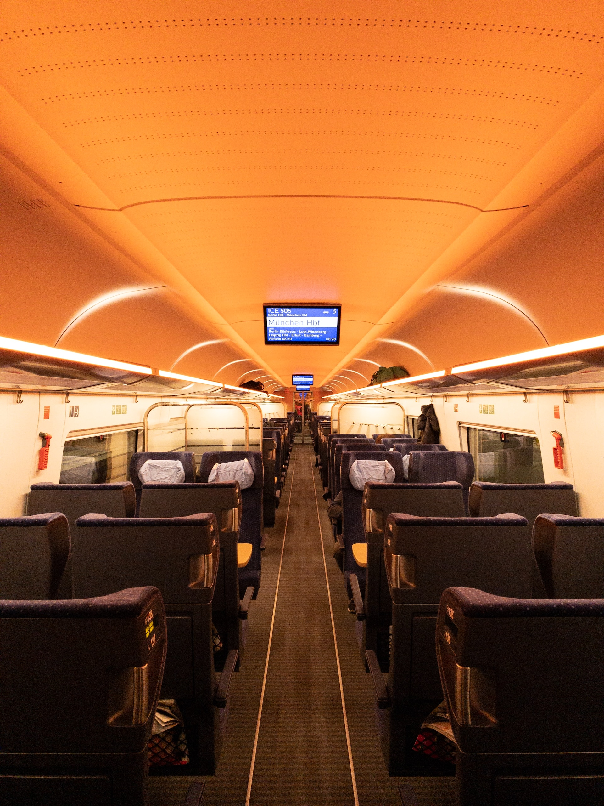

Luzern
Willkommen in Luzern!
Welkom in Luzern, een sprookjesachtige stad gelegen aan het prachtige Vierwoudstrekenmeer in Zwitserland.Luzern betovert bezoekers met zijn adembenemende natuurlijke schoonheid, rijke geschiedenis en charmante middeleeuwse architectuur.
Verken de oude binnenstad met zijn geplaveide straten, historische gebouwen en pittoreske pleinen.
Loop over de iconische Kapellbrücke, een houten overdekte brug met een toren die dateert uit de 14e eeuw.
Geniet van het uitzicht op het Vierwoudstrekenmeer, omringd door majestueuze bergen.
Maak een boottocht op het meer of wandel langs de promenade en geniet van de serene schoonheid van de omgeving.
Luzern biedt ook een rijk cultureel leven, met musea zoals het Richard Wagner Museum en het Verkehrshaus der Schweiz, dat gewijd is aan transportgeschiedenis.
Mis de beroemde Luzerner Fasnacht, het grootste carnavalsfeest van Zwitserland, niet, waar kleurrijke kostuums en festiviteiten de straten vullen.
Laat je betoveren door de magie van Luzern, waar natuurlijke pracht en culturele schatten samenkomen.
De must-sees van Luzern
Kapellbrücke
Wandel over de betoverende Kapellbrücke, een middeleeuwse houten overdekte brug die het symbool van Luzern is geworden.
Bewonder de schilderijen die de brug versieren en geniet van het uitzicht op de rivier de Reuss terwijl je de charme van deze historische bezienswaardigheid absorbeert.
Wandel over de betoverende Kapellbrücke, een middeleeuwse houten overdekte brug die het symbool van Luzern is geworden.
Bewonder de schilderijen die de brug versieren en geniet van het uitzicht op de rivier de Reuss terwijl je de charme van deze historische bezienswaardigheid absorbeert.
Vierwaldstättersee
Laat je betoveren door de serene schoonheid van het Vierwoudstrekenmeer, omringd door majestueuze bergen.
Geniet van een ontspannen boottocht op het meer, wandel langs de prachtige promenade of neem de kabelbaan naar de nabijgelegen bergtoppen voor een adembenemend panoramisch uitzicht.
Laat je betoveren door de serene schoonheid van het Vierwoudstrekenmeer, omringd door majestueuze bergen.
Geniet van een ontspannen boottocht op het meer, wandel langs de prachtige promenade of neem de kabelbaan naar de nabijgelegen bergtoppen voor een adembenemend panoramisch uitzicht.
Musea
Ontdek de culturele schatten van Luzern in de musea van de stad.
Bezoek het Richard Wagner Museum, gewijd aan de beroemde componist, en leer meer over zijn leven en werk.
Verken het Verkehrshaus der Schweiz, een museum dat de geschiedenis van transport en technologie tentoonstelt, en laat je fascineren door de innovaties.
Ontdek de culturele schatten van Luzern in de musea van de stad.
Bezoek het Richard Wagner Museum, gewijd aan de beroemde componist, en leer meer over zijn leven en werk.
Verken het Verkehrshaus der Schweiz, een museum dat de geschiedenis van transport en technologie tentoonstelt, en laat je fascineren door de innovaties.
Accommodatie
Tijdens je verblijf logeer je in het Hotel Barabas.
Barabas Luzern was vroeger een gevangenis en is in 2018 gerenoveerd.
De voormalige cellen zijn bewaard in de oorspronkelijke vorm.
Barabas Luzern ligt in Luzern, op 3 minuten wandelen van de Kapelbrug.
Populaire bezienswaardigheden in de buurt zijn het KKL Culturele en conferentiecentrum Lucerne en het Leeuwenmonument.
De Gletsjertuin van Luzern is op 10 minuten wandelen te vinden.
Barabas Luzern was vroeger een gevangenis en is in 2018 gerenoveerd.
De voormalige cellen zijn bewaard in de oorspronkelijke vorm.
Barabas Luzern ligt in Luzern, op 3 minuten wandelen van de Kapelbrug.
Populaire bezienswaardigheden in de buurt zijn het KKL Culturele en conferentiecentrum Lucerne en het Leeuwenmonument.
De Gletsjertuin van Luzern is op 10 minuten wandelen te vinden.
De treinreis

Luzern is makkelijk en snel in één dag bereikbaar met de comfortabele ICE- en IC-treinen.
Onderweg dien je twee keer over te stappen: in Köln en Basel.
Voor de heenreis hebt u de volgende reisopties:
Voor de terugreis beschikt u over de volgende reisopties:
Onderweg dien je twee keer over te stappen: in Köln en Basel.
Voor de heenreis hebt u de volgende reisopties:
- Vertrek in Brussel-Zuid om 06:23, aankomst in Luzern om 14:05.
- Vertrek in Brussel-Zuid om 08:23, aankomst in Luzern om 16:05.
- Vertrek in Brussel-Zuid om 10:25, aankomst in Luzern om 18:05.
- Vertrek in Brussel-Zuid om 12:25, aankomst in Luzern om 20:05.
- Vertrek in Brussel-Zuid om 14:25, aankomst in Luzern om 22:05.
- Vertrek in Brussel-Zuid om 16:22, aankomst in Luzern om 01:16.
Voor de terugreis beschikt u over de volgende reisopties:
- Vertrek in Luzern om 05:54, aankomst in Brussel-Zuid om 13:35.
- Vertrek in Luzern om 07:54, aankomst in Brussel-Zuid om 15:35.
- Vertrek in Luzern om 09:54, aankomst in Brussel-Zuid om 17:35.
- Vertrek in Luzern om 11:54, aankomst in Brussel-Zuid om 19:35.
- Vertrek in Luzern om 13:54, aankomst in Brussel-Zuid om 21:35.
Prijzen
Deze reis is beschikbaar vanaf €700,- per persoon.Inbegrepen in de prijs zijn de heen- en terugreis, 3 overnachtingen ter plaatse inclusief ontbijt en BTW.
Op verzoek kan de reisduur steeds uitgebreid of ingekort worden.
Boek je reis via ons boekingsformulier en wij sturen je zo snel mogelijk een reisvoorstel.